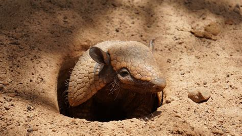
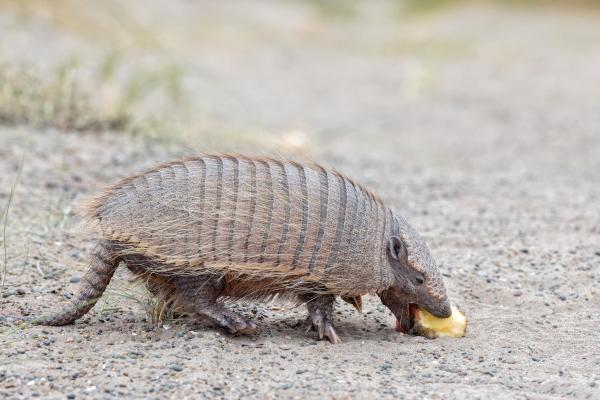

Le Tatou
Cingulata
On dénombre aujourd'hui 21 espèces de tatous, des mammifères pour le moins étonnants avec leur carapace qui évoque une sorte de cotte de maille.
Les origines (cingulata)
Les tatous (Cingulata) est un mammifères placentaires d'Amérique tropicale et subtropicale. Les tatous actuels sont rangés dans deux familles, celle des Dasypodidae et celle des Chlamyphoridae1. Parmi les espèces fossiles, on distingue les glyptodons, classées avec les Chlamyphoridae2. Ils sont omnivores même si leur régime alimentaire est principalement composé d'insectes (chenilles, fourmis, larves...). Ils sont reconnaissables à leurs plaques cornées formant une carapace défensive lorsqu'ils se roulent en boule.
L'alimentation

Le Tatou est un insectivore il se nourrit principalement d'insectes (chenilles, fourmis, larves...) mais certaines espèce de tatou sont omnivore, dans certaines régions lorsqu'il ne trouve pas de nourriture ils peuvent s'adapter et commencer a manger des rongeurs ce qui n'est normalement pas dans leur régime alimentaire